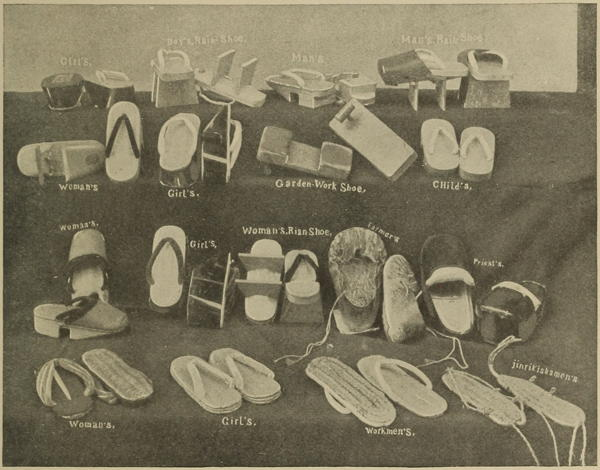

“Styles of Japanese sandals”
Japan (1897)
The sandals worn by both sexes are of straw, fastened by a thong which passes between the great toe and its neighbour. To keep these sandals on in walking requires a depression of the heels, which of course causes a corresponding depression in other parts of the body, and gives the wearer an awkward appearance: a woman walking quickly has to shuffle along at a step something between a toddle and a trot. A thick cotton sock, with a partition for the great toe, is worn by the men, beneath their sandals, and both men and women tramp along in high wooden clogs in wet weather; but, sensible people as they are, no sooner do they come into a house than they kick off shoes and stockings, and walk about at their ease with naked feet on the soft mats.
Japan, the Amoor, and the Pacific (1861)
The Japanese wear a peculiar kind of overshoe, which, in wet or dirty weather, acts like a species of stilt to elevate them out of the mud. A sort of straw sandal is also very generally worn. The stocking is white, and made so as to show the shape of the great toe only, between which and the next there is an opening, so that the sandal when put on the foot fits exactly into this division, and thus remains immovable. Another sandal, made on the same principle, but more ornamental, is manufactured of wood, and intended for the use of the ladies, by whom it is worn as an overshoe.
A Lady’s Visit to Manilla and Japan (1863)
We had scarcely realised how all ordinary Japanese would use wooden clogs (geta). Their feet are covered with socks (tabi), made of strong white cotton material, and with a division for the great toe, through which the thong is passed that keeps on the clog. How it keeps it on, it is difficult for English people to understand; but, of course, the Japanese shuffle along, and do not run, or, if obliged to run, they either go barefoot or use straw sandals, or dark blue tabi.
Japan As We Saw It (Bickersteth) (1893)
The waraji, or sandals, worn by these [jinrikisha] coolies are woven of rice straw, and cost less than five cents a pair. In the good old days they were much cheaper. Every village and farm-house make them, and every shop sells them. In their manufacture the big toe is a great assistance, as this highly trained member catches and holds the strings while the hands weave. On country roads wrecks of old waraji lie scattered where the wearer stepped out of them and ran on, while ruts and mudholes are filled with them. For long tramps the foreigner finds the waraji and the tabi, or digitated stocking, much better than his own clumsy boots, and he ties them on as overshoes when he has rocky paths to climb. Coolies often dispense with waraji and wear heavy tabi, with a strip of the almost indestructible hechima fibre for the soles. The hechima is the gourd which furnishes the vegetable washrag, or looffa sponge of commerce. The snow-white cotton tabis of the better classes are made an important part of their costume.
Jinrikisha Days in Japan (1902)
◀ ClothingHair ▶